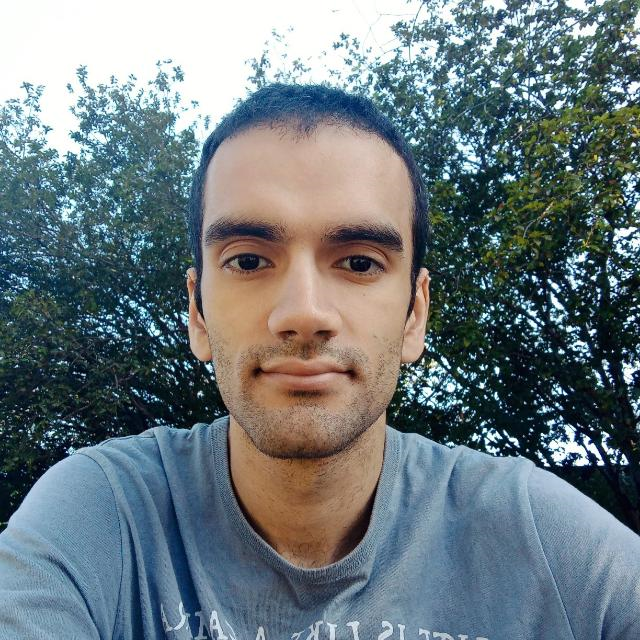
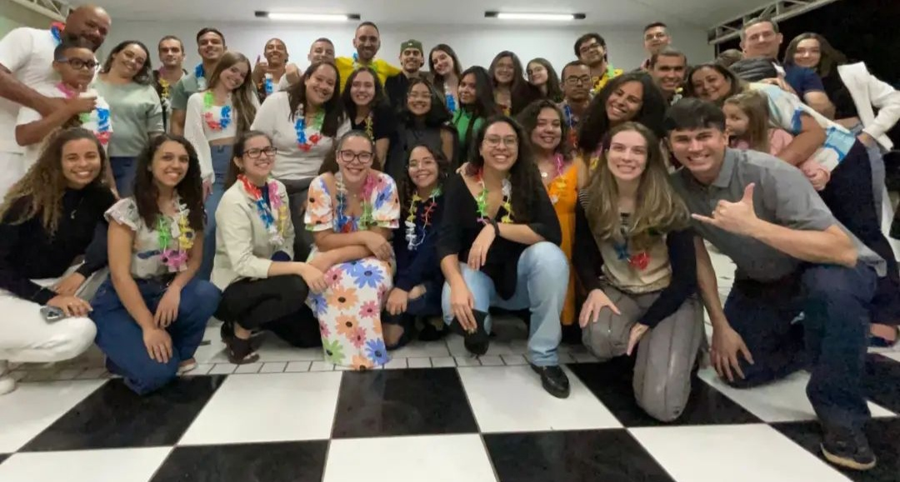
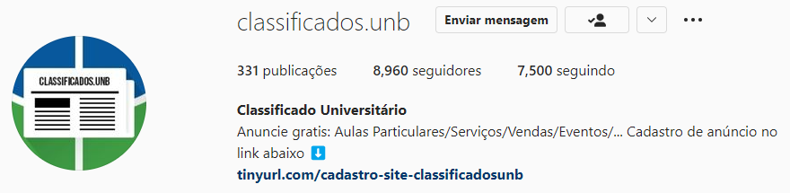

Luís Eduardo Ribeiro Guerra
Sou estudante de Engenharia de Redes de Comunicações na Universidade de Brasília desde o 2º semestre de 2019.
Sou programador e desenvolvedor de interfaces gráficas. Já contribui para alguns projetos de código aberto, principalmente no desenvolvimento de ícones para sistemas operacionais Linux.
(Um dos temas que tenho desenvolvido para Linux)
Desde 2019 eu participo de um grupo cristão na paróquia Nossa Senhora de Nazaré, passamos por muitas dificuldades em 2020 e 2021 por conta da pandemia mas conseguimos voltar a atividade em 2022 e com novos integrantes. Lá eu conheci pessoas maravilhosas que considero amigos do peito e uma família.

Em 2020 eu criei uma página de classificados universítários na UnB, no início era uma idéia exótica e com um futuro incerto. Porém os estudantes gostaram bastante da ideia, em menos de um ano a página já tinha mais de 6000 seguidores e hoje a página tem quase 9000 seguidores. Deu muito trabalho, mas me ajudou a passar o tempo na pandemia, recebi várias mensagens elogiando o projeto e tive a oportunidade de aprender bastante.

Abaixo estão minhas redes sociais, se brincar o GitHub é a "rede social" que estou mais ativo.
Minhas redes Sociais